Where next?
A homepage built around one question for every driver and client: where next?
We spent some time with your current website and put together two things for you to look at: a plain-English check of how easily people and AI assistants can find you online, and some design ideas for a new website.
Open any of them to scroll through the whole page. Nothing here is final, and nothing on your current website has been changed.
A homepage built around one question for every driver and client: where next?
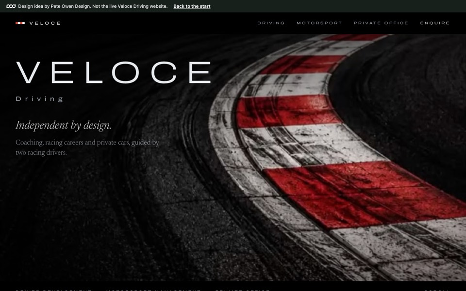
Your homepage as a film title sequence: dark, moody roads and circuits, one chapter for each thing you do, ending on where next.
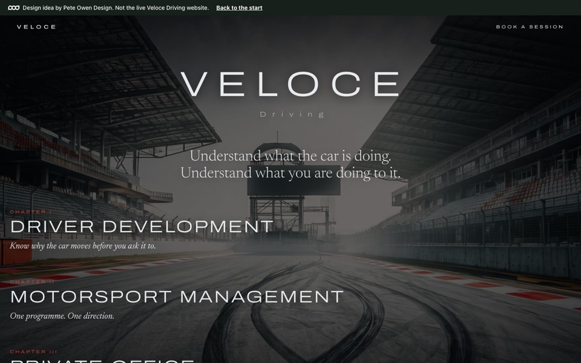
Scroll and you drive down the main straight: your name and your three services pass like trackside boards, then the page opens out into the detail, the two of you, and where next.
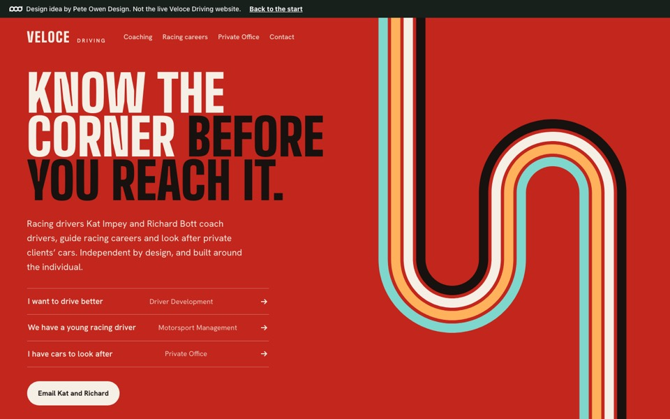
The whole homepage is one circuit seen from above, and each service is a corner. The track draws on ahead of you as you scroll.
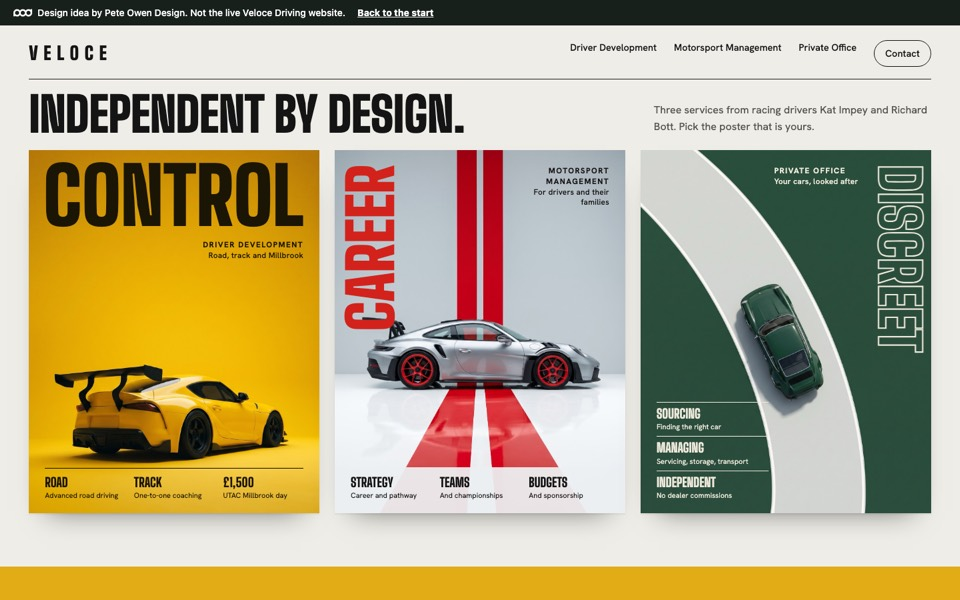
A set of three posters, one per service, each in its own colour with one car and one giant word.
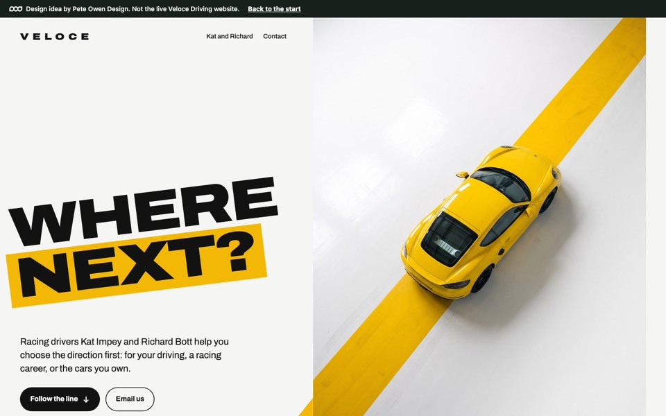
One yellow road line runs down the whole page, past three stops: next lap, next season, next car.
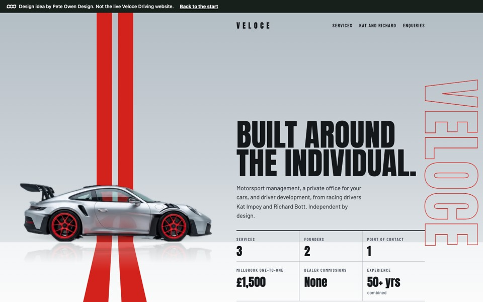
Veloce presented the way a great car is: one studio photograph, the name set huge, and a small, exact specification table.
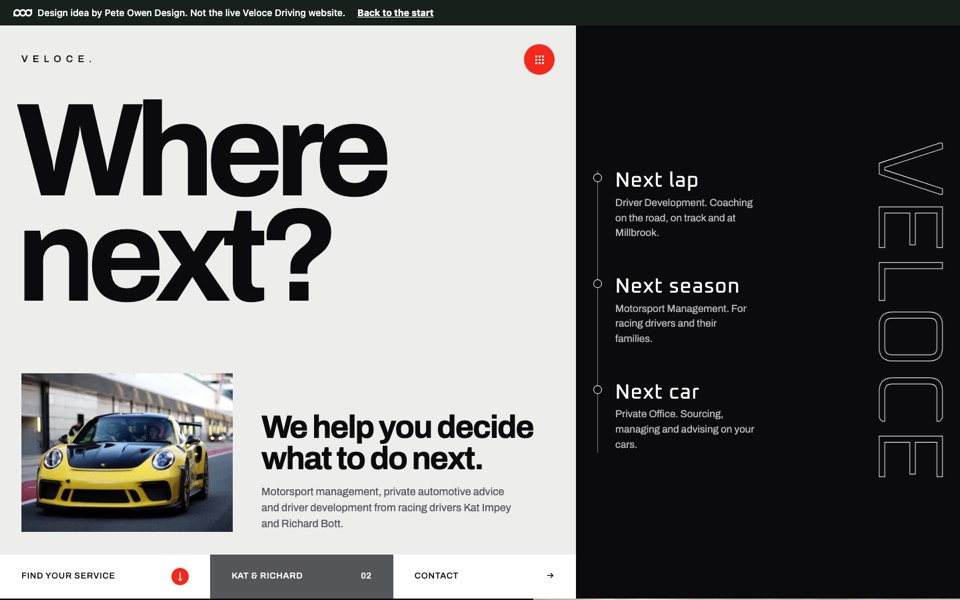
An earlier version of Where next?, with the three services as three next steps.
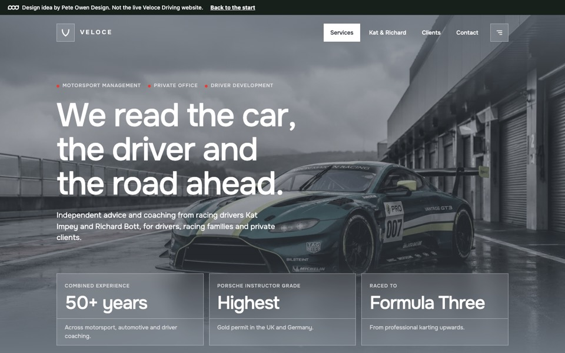
Calm glass readouts over a wet pit lane, and a circuit map whose three sectors are your three services.
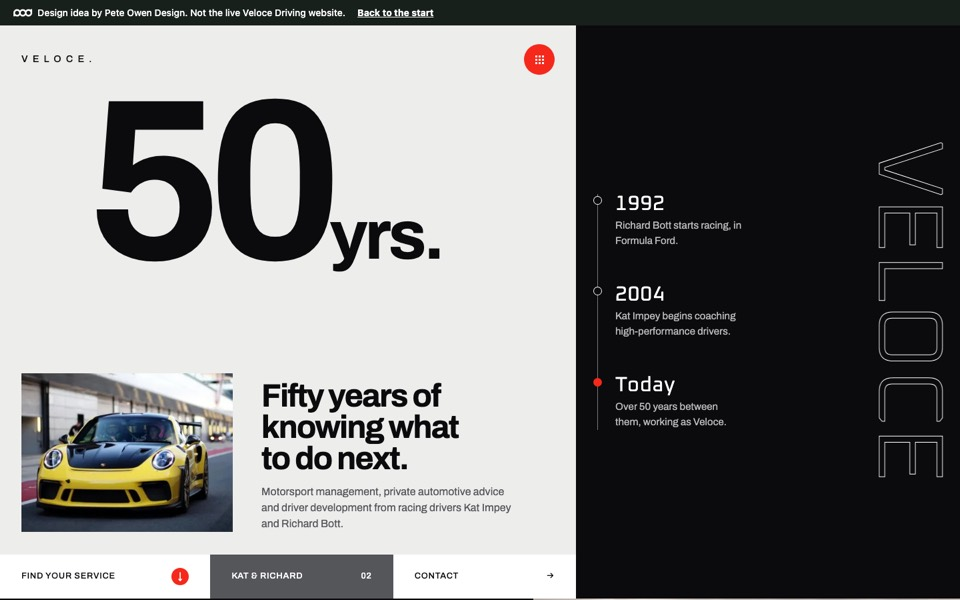
A giant 50 and a timeline of your real dates, in black and white with one red dot.
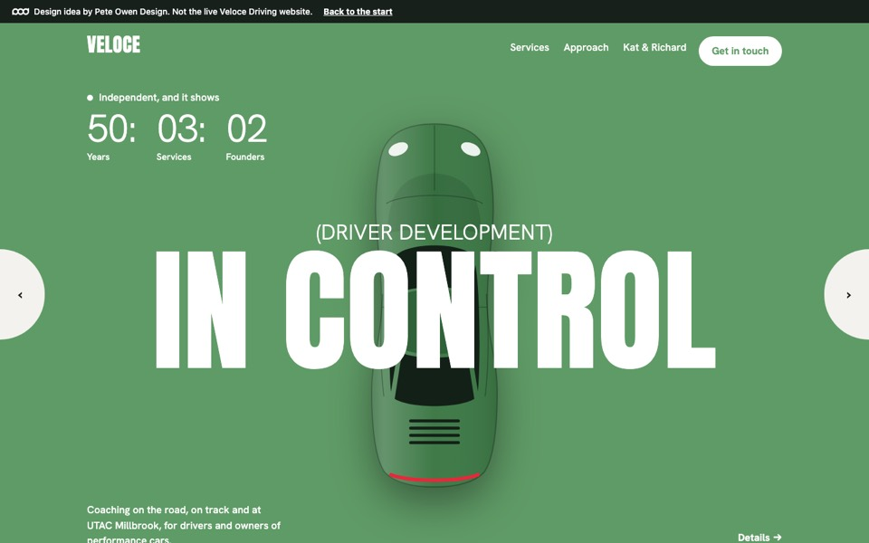
One car seen from above on a field of colour. Flick left or right and the colour, the car and the word change with the service.
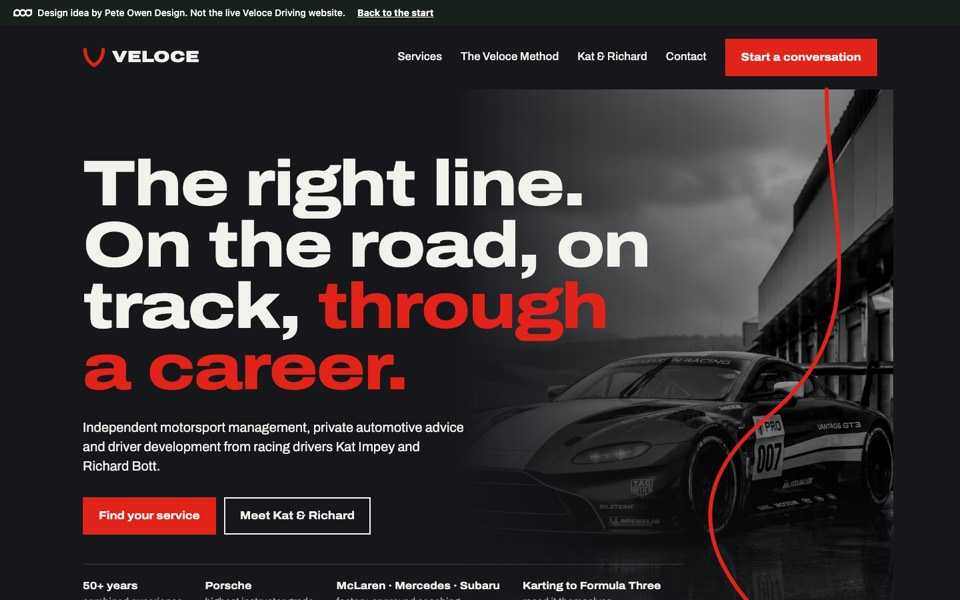
One red line sweeps down the first screen, and the three services are the three sectors of a lap.
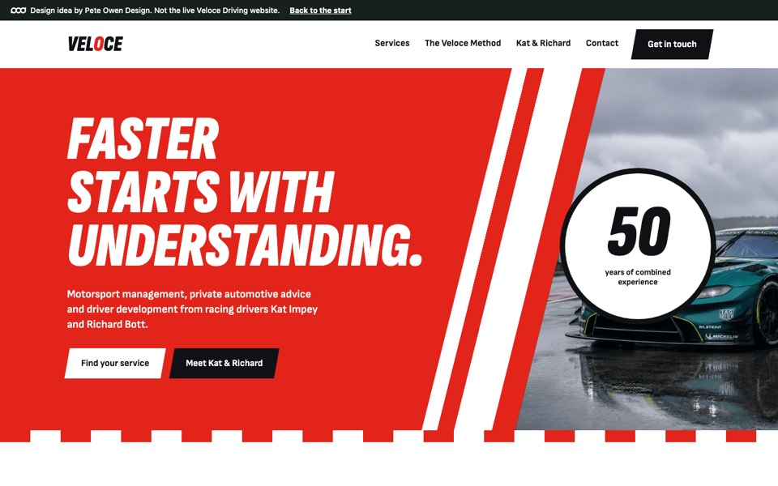
The brand painted like the side of a race car: slanted blocks of red, black and white, and the services on a starting grid.
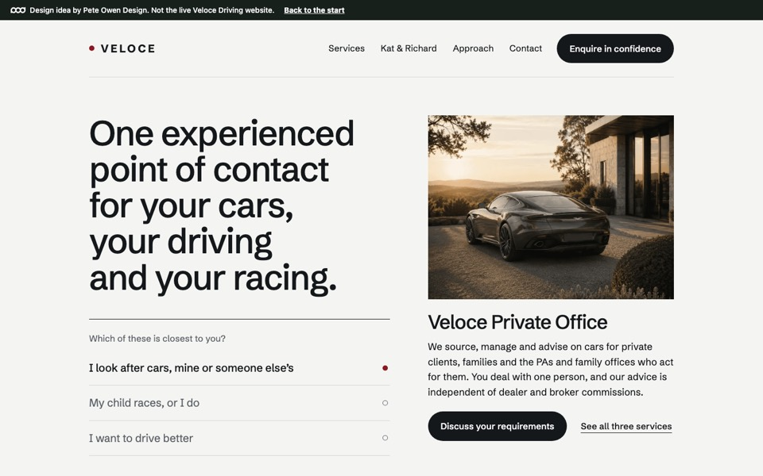